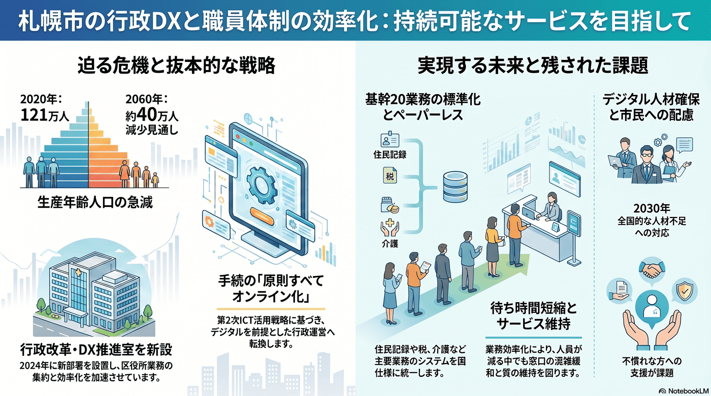

行政DXと職員体制の効率化
限られた人員で増える行政需要を支えるため、業務のデジタル化が急務となる。

背景
人口減で税収の伸びが見込めない一方、高齢化で行政需要は増える。限られた職員数で質を保つには、デジタル技術による業務効率化と組織の再編が避けられない。市は『第2次札幌市ICT活用戦略』（計画期間 令和6〜13年度／2024〜2031年度、施策部分は2024〜2027年度）や『札幌DX推進方針』に基づき、行政手続のオンライン化・システム標準化・生成AI活用などを進めている。
主要データ
| 計画 | 第2次札幌市ICT活用戦略（2024〜2031年度。施策は2024〜2027年度、2027年度に中間見直し） |
|---|---|
| 推進体制 | 2024年に行政改革・DX推進室を新設。区役所の後方業務を集約・省スペース化 |
| 国の標準化 | 住民記録・税・介護など基幹20業務システムを国の統一仕様へ標準化 |
| 背景（担い手） | 生産年齢人口は2020年約121万人→2060年に約40万人減の見通し。デジタル人材は全国で2030年に約45万人不足の予測 |
事実
- 札幌市は行政改革・DX推進室を新設し、区役所の後方業務の集約や省スペース化など業務効率化を進めている。
- デジタル戦略推進局がスマートシティ推進やマイナンバーカード利活用、基幹システムの運用などを担っている。
- 第2次札幌市ICT活用戦略（計画期間2024〜2031年度）で行政手続は『原則すべてオンライン化』を掲げ、クラウド第一原則・RPA・生成AIの活用や業務改革（BPR）で職員の業務時間とコストの削減を図るとしている。
- 国の方針に沿って住民記録・税・介護保険などの基幹業務システムを統一仕様へ標準化し、ペーパーレス（紙の削減・保管スペース縮小）や窓口の待ち時間短縮も進めるとしている。
解釈
行政DXは単なる効率化ではなく、縮小する人員と財源で行政サービスの質を保つための前提条件になりつつある。一方でデジタルに不慣れな市民への配慮も欠かせない。
提案
- 窓口・申請のオンライン化と業務集約（デジタル弱者への対応とセット）。
- DX人材の確保と、特定個人に依存しない体制づくり。
深掘り — 市民の声と答え
行政DXで、具体的にどれくらいコストや時間が減るの？
札幌市は『原則すべての手続のオンライン化』、基幹システムの国標準化、RPA・生成AIの活用、ペーパーレス、窓口の待ち時間短縮などで、職員の業務時間とコストの削減をねらっている。ただし『何時間・何円減らす』といった定量的な削減目標は大きくは公表しておらず、効果は施策ごとの検証待ち。第2次ICT活用戦略は2027年度に中間見直しを行う予定で、ここで進み具合が問われる。
なぜ今、行政DXを急ぐの？
生産年齢人口は2020年の約121万人から2060年に約40万人減る見通しで、職員を増やす余地は乏しい。一方で高齢化により行政需要は増え続ける。全国でもデジタル人材は2030年に約45万人不足すると予測され、限られた人員で行政サービスの質を保つには、定型業務の自動化やオンライン化が前提になる。だからこそ効率化を『今のうちに』進める必要がある。
検討体制・メンバー
札幌市デジタル戦略推進局・行政改革DX推進室が中心。検討会にはUX/業務改革の専門家、各部局の現場職員、情報セキュリティの専門家、高齢者など多様な市民の代表を入れ、効率化と使いやすさを両立させる。
AIノート
AIの貢献度は大。問い合わせ対応のチャット、申請書類の自動処理、文書作成・要約、定型業務の自動化で職員の負担を大きく減らせる。導入効果は高いが、個人情報の扱いと、デジタルに不慣れな人への代替手段の確保が不可欠。